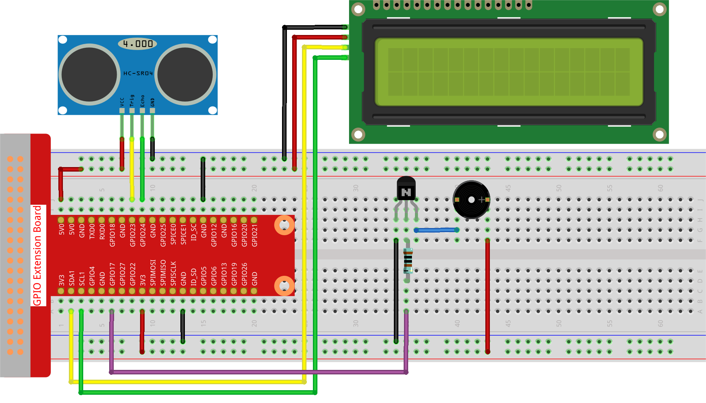

Note
Hello, welcome to the SunFounder Raspberry Pi & Arduino & ESP32 Enthusiasts Community on Facebook! Dive deeper into Raspberry Pi, Arduino, and ESP32 with fellow enthusiasts.
Why Join?
Expert Support: Solve post-sale issues and technical challenges with help from our community and team.
Learn & Share: Exchange tips and tutorials to enhance your skills.
Exclusive Previews: Get early access to new product announcements and sneak peeks.
Special Discounts: Enjoy exclusive discounts on our newest products.
Festive Promotions and Giveaways: Take part in giveaways and holiday promotions.
👉 Ready to explore and create with us? Click [here] and join today!
3.1.3 Reversing Alarm
Introduction
In this project, we will use LCD, buzzer and ultrasonic sensors to make a reverse assist system. We can put it on the remote control vehicle to simulate the actual process of reversing the car into the garage.
Required Components
In this project, we need the following components.

Schematic Diagram
Ultrasonic sensor detects the distance between itself and the obstacle that will be displayed on the LCD in the form of code. At the same time, the ultrasonic sensor let the buzzer issue prompt sound of different frequency according to different distance value.
T-Board Name |
physical |
wiringPi |
BCM |
GPIO23 |
Pin 16 |
4 |
23 |
GPIO24 |
Pin 18 |
5 |
24 |
GPIO17 |
Pin 11 |
0 |
17 |
SDA1 |
Pin 3 |
||
SCL1 |
Pin 5 |

Experimental Procedures
Step 1: Build the circuit.
Step 2: Change directory.
cd ~/raphael-kit/python-pi5
Step 3: Run.
sudo python3 3.1.3_ReversingAlarm.py
As the code runs, ultrasonic sensor module detects the distance to the obstacle and then displays the information about the distance on LCD1602; besides, buzzer emits warning tone whose frequency changes with the distance.
Note
If you get the error
FileNotFoundError: [Errno 2] No such file or directory: '/dev/i2c-1', you need to refer to I2C Configuration to enable the I2C.If you get
ModuleNotFoundError: No module named 'smbus2'error, please runsudo pip3 install smbus2.If the error
OSError: [Errno 121] Remote I/O errorappears, it means the module is miswired or the module is broken.If the code and wiring are fine, but the LCD still does not display content, you can turn the potentiometer on the back to increase the contrast.
Warning
If there is an error prompt RuntimeError: Cannot determine SOC peripheral base address, please refer to If gpiozero doesn’t work.
Code
Note
You can Modify/Reset/Copy/Run/Stop the code below. But before that, you need to go to source code path like raphael-kit/python-pi5. After modifying the code, you can run it directly to see the effect.
#!/usr/bin/env python3
import LCD1602
import time
from gpiozero import DistanceSensor, Buzzer
# Initialize the ultrasonic sensor with GPIO pins
sensor = DistanceSensor(echo=24, trigger=23) # Echo pin is GPIO 24, Trigger pin is GPIO 23
# Initialize the buzzer connected to GPIO pin 17
buzzer = Buzzer(17)
def lcdsetup():
# Initialize the LCD with I2C address and enable backlight
LCD1602.init(0x27, 1) # 0x27 is the I2C address of the LCD
LCD1602.clear() # Clear the LCD display
# Display startup messages on LCD
LCD1602.write(0, 0, 'Ultrasonic Starting')
LCD1602.write(1, 1, 'By SunFounder')
time.sleep(2) # Wait for 2 seconds
def distance():
# Calculate and return the distance measured by the sensor
dis = sensor.distance * 100 # Convert distance to centimeters
print('Distance: {:.2f} cm'.format(dis)) # Print distance with two decimal places
time.sleep(0.3) # Wait for 0.3 seconds before next measurement
return dis
def loop():
# Continuously measure distance and update LCD and buzzer
while True:
dis = distance() # Get the current distance
# Display distance and handle alerts based on distance
if dis > 400: # Check if distance is out of range
LCD1602.clear()
LCD1602.write(0, 0, 'Error')
LCD1602.write(3, 1, 'Out of range')
time.sleep(0.5)
else:
# Display current distance on LCD
LCD1602.clear()
LCD1602.write(0, 0, 'Distance is')
LCD1602.write(5, 1, str(round(dis, 2)) + ' cm')
# Adjust buzzer frequency based on distance
if dis >= 50:
time.sleep(0.5)
elif 20 < dis < 50:
# Medium distance: medium buzzer frequency
for _ in range(2):
buzzer.on()
time.sleep(0.05)
buzzer.off()
time.sleep(0.2)
elif dis <= 20:
# Close distance: high buzzer frequency
for _ in range(5):
buzzer.on()
time.sleep(0.05)
buzzer.off()
time.sleep(0.05)
try:
lcdsetup() # Setup the LCD display
loop() # Start the measurement loop
except KeyboardInterrupt:
# Turn off buzzer and clear LCD on user interrupt (e.g., Ctrl+C)
buzzer.off()
LCD1602.clear()
Code Explanation
This script utilizes several libraries for its functionality. The
LCD1602library manages the LCD display, whiletimeprovides time-related functions. Thegpiozerolibrary is essential for Raspberry Pi GPIO pin interactions, particularly for operating the DistanceSensor and Buzzer.#!/usr/bin/env python3 import LCD1602 import time from gpiozero import DistanceSensor, Buzzer
The ultrasonic sensor is set up with its echo and trigger pins connected to GPIO pins 24 and 23, respectively. Additionally, a buzzer is connected to GPIO pin 17.
# Initialize the ultrasonic sensor with GPIO pins sensor = DistanceSensor(echo=24, trigger=23) # Echo pin is GPIO 24, Trigger pin is GPIO 23 # Initialize the buzzer connected to GPIO pin 17 buzzer = Buzzer(17)
The initialization of the LCD display involves clearing it and displaying a startup message.
def lcdsetup(): # Initialize the LCD with I2C address and enable backlight LCD1602.init(0x27, 1) # 0x27 is the I2C address of the LCD LCD1602.clear() # Clear the LCD display # Display startup messages on LCD LCD1602.write(0, 0, 'Ultrasonic Starting') LCD1602.write(1, 1, 'By SunFounder') time.sleep(2) # Wait for 2 seconds
The
distancefunction calculates the distance measured by the ultrasonic sensor and outputs it, returning the value in centimeters.def distance(): # Calculate and return the distance measured by the sensor dis = sensor.distance * 100 # Convert distance to centimeters print('Distance: {:.2f} cm'.format(dis)) # Print distance with two decimal places time.sleep(0.3) # Wait for 0.3 seconds before next measurement return dis
The main loop continually measures the distance, updating both the LCD and the buzzer. It handles different distance ranges with specific actions, like displaying error messages or varying buzzer frequencies based on the measured distance.
def loop(): # Continuously measure distance and update LCD and buzzer while True: dis = distance() # Get the current distance # Display distance and handle alerts based on distance if dis > 400: # Check if distance is out of range LCD1602.clear() LCD1602.write(0, 0, 'Error') LCD1602.write(3, 1, 'Out of range') time.sleep(0.5) else: # Display current distance on LCD LCD1602.clear() LCD1602.write(0, 0, 'Distance is') LCD1602.write(5, 1, str(round(dis, 2)) + ' cm') # Adjust buzzer frequency based on distance if dis >= 50: time.sleep(0.5) elif 20 < dis < 50: # Medium distance: medium buzzer frequency for _ in range(2): buzzer.on() time.sleep(0.05) buzzer.off() time.sleep(0.2) elif dis <= 20: # Close distance: high buzzer frequency for _ in range(5): buzzer.on() time.sleep(0.05) buzzer.off() time.sleep(0.05)
Upon execution, the script sets up the LCD and enters the main loop. It can be interrupted with a keyboard command (Ctrl+C), which turns off the buzzer and clears the LCD.
try: lcdsetup() # Setup the LCD display loop() # Start the measurement loop except KeyboardInterrupt: # Turn off buzzer and clear LCD on user interrupt (e.g., Ctrl+C) buzzer.off() LCD1602.clear()